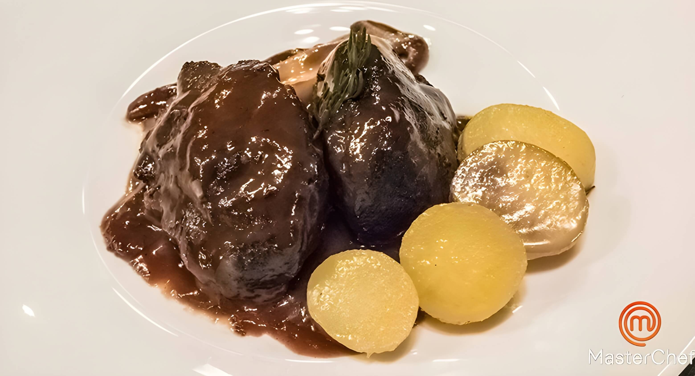

-
Merluza al Horno con Emulsión de Espárragos Blancos.
Lomo de merluza fresca cocinado al punto exacto, sobre una crema ligera de espárragos y un toque de limón. Servido con patatas confitadas y cebolla caramelizada.

-
Tarta de Queso al Horno con Base de Galleta de Almendra.
Tarta de Queso al Horno con Base de Galleta de Almendra. Un clásico de la casa desde 2005. Textura cremosa, sabor intenso y final ligeramente ácido, acompañada de coulis de frutos rojos.

-
Carrilleras de Cerdo Ibérico con Papas de Boniato y Cítricos
Cocinadas a baja temperatura durante 12 horas. Servidas sobre un cremoso puré de boniato con ralladura de naranja y crujiente de puerro.
